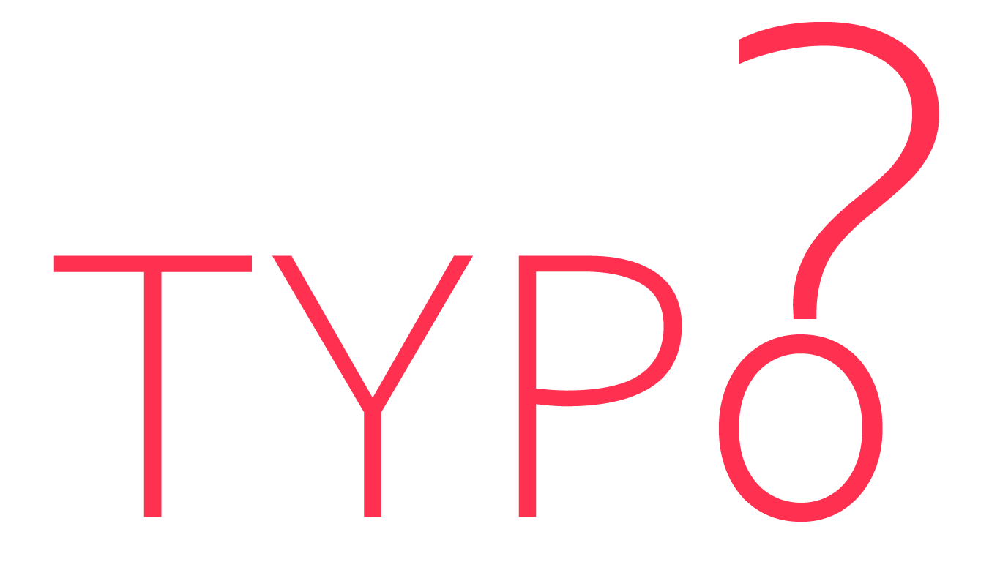
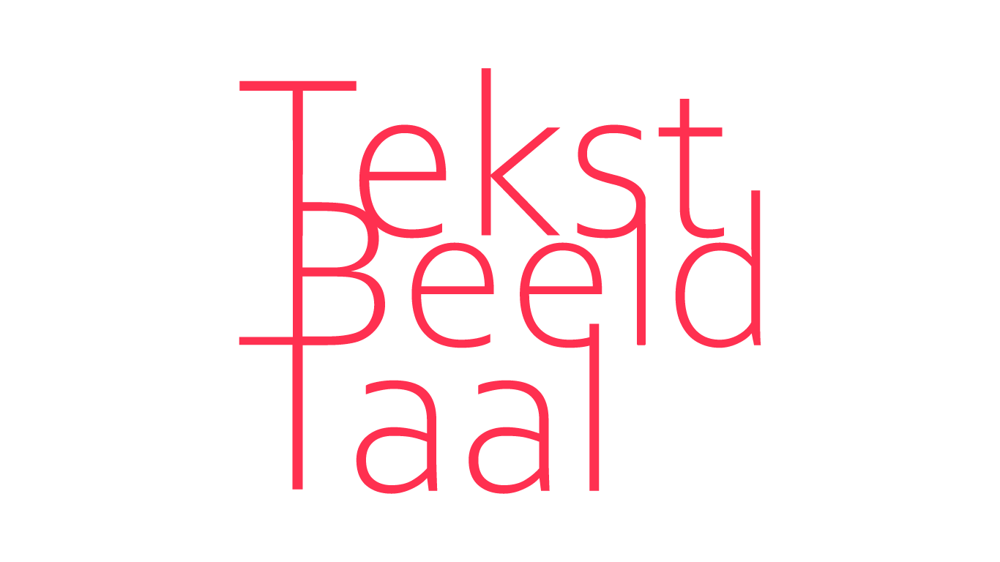

Typografie heeft alles te maken met letters. De typografie is een hulpmiddel om een tekst en het schrift een beeldende vorm te geven. Zij maakt met haar letters het geschrevene voor iedereen leesbaar. De leesbaarheid is het belangrijkste van de typografie. De ware bedoeling van het lettertype is het verduidelijken van de boodschap. De typografie wordt bepaald door het soort tekst. Enkele voorbeelden van ‘soorten’ tekst: boek, krant, formulier, brochure,... De vormgeving van de tekst versterkt de inhoud of de boodschap van de tekst.
Al het drukwerk dat je dagelijks ziet (lay-out), bestaat uit 3 onderdelen:
1. De tekst = de geschreven inhoud
2. Het lettertype = de vorm waarin een tekst gezet is
3. De illustraties = de ‘niet-tekst’ van een pagina, in de vorm van tekeningen of foto’s
Typografie werkt niet zo opvallend. Goede typografie lijkt onzichtbaar maar werkt onderliggend. Zij brengt de boodschap van de tekst over en, even belangrijk zij brengt een gevoel over.
